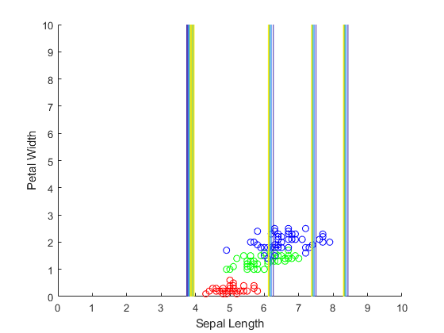
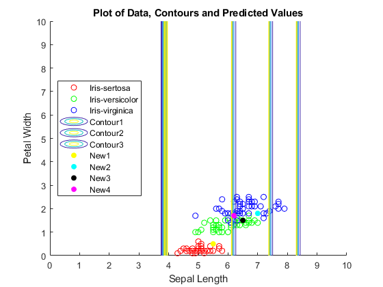

Contents
prob 3
clear all
close all
opts = detectImportOptions('iris_dataset.csv', 'NumHeaderLines', 1);
preview('iris_dataset.csv', opts)
A = readtable('iris_dataset.csv', 'HeaderLines', 1);
ans =
8×5 table
Var1 Var2 Var3 Var4 Var5
____ ____ ____ ____ _____________
5.1 3.5 1.4 0.2 'Iris-setosa'
4.9 3 1.4 0.2 'Iris-setosa'
4.7 3.2 1.3 0.2 'Iris-setosa'
4.6 3.1 1.5 0.2 'Iris-setosa'
5 3.6 1.4 0.2 'Iris-setosa'
5.4 3.9 1.7 0.4 'Iris-setosa'
4.6 3.4 1.4 0.3 'Iris-setosa'
5 3.4 1.5 0.2 'Iris-setosa'
Part B
indis = find(strcmp(A.Var5, 'Iris-setosa'));
indver = find(strcmp(A.Var5, 'Iris-versicolor'));
indvir = find(strcmp(A.Var5, 'Iris-virginica'));
A1 = A(1:50,:);
A2 = A(51:100,:);
A3 = A(101:150,:);
scatter(A1.Var1, A1.Var4, 'r')
hold on
scatter(A2.Var1, A2.Var4, 'g')
hold on
scatter(A3.Var1, A3.Var4, 'b')
axis([0 10 0 10])
hold on
xlabel('Sepal Length')
ylabel('Petal Width')
x1 = 0:0.05:10;
x4 = 0:0.05:10;
[X1, X2] = meshgrid(x1,x4);
sigma1 = 0.2;
sigma4 = sigma1;
amesh1 = 0;
amesh1_x4 = 0;
m = 50;
pc1 = 50/150;
pc2 = 50/150;
pc3 = 50/150;
for i = 1:50
am1 = exp(-(X1 - A1.Var1(i)).^2./(2*sigma1^2));
amesh1 = amesh1+am1;
end
for ii = 1:50
am4 = exp(-(X2 - A1.Var4(ii)).^2./(2*sigma4^2));
amesh1_x4 = amesh1+am4;
end
meshtotx1a1 = 1/m*1/(sigma1*sqrt(2*pi)) .* amesh1;
meshtotx4a1 = 1/m*1/(sigma1*sqrt(2*pi)) .* amesh1_x4;
totmesha1 = meshtotx1a1*meshtotx4a1 *pc1;
contour(X1, X2, totmesha1, 0:0.03:0.15)
for i = 1:50
am1 = exp(-(X1 - A2.Var1(i)).^2./(2*sigma1^2));
amesh1 = amesh1+am1;
end
for ii = 1:50
am4 = exp(-(X2 - A2.Var4(ii)).^2./(2*sigma4^2));
amesh1_x4 = amesh1+am4;
end
meshtotx1a1 = 1/m*1/(sigma1*sqrt(2*pi)) .* amesh1;
meshtotx4a1 = 1/m*1/(sigma1*sqrt(2*pi)) .* amesh1_x4;
totmesha1 = meshtotx1a1*meshtotx4a1 *pc1;
contour(X1, X2, totmesha1, 0:0.03:0.15)
for i = 1:50
am1 = exp(-(X1 - A3.Var1(i)).^2./(2*sigma1^2));
amesh1 = amesh1+am1;
end
for ii = 1:50
am4 = exp(-(X2 - A3.Var4(ii)).^2./(2*sigma4^2));
amesh1_x4 = amesh1+am4;
end
meshtotx1a1 = 1/m*1/(sigma1*sqrt(2*pi)) .* amesh1;
meshtotx4a1 = 1/m*1/(sigma1*sqrt(2*pi)) .* amesh1_x4;
totmesha1 = meshtotx1a1*meshtotx4a1 *pc1;
contour(X1, X2, totmesha1, 0:0.03:0.15)

Part C
x1new = [5.5, 7, 6.5, 6.2];
x4new = [0.5, 1.8, 1.5, 1.7];
bm2 = 50*[];
bm4 = 50*[];
bm5 = 5*[];
bm6 = 5*[];
for i = 1:length(x1new)
for kk = 1:50
bm1 = exp(-(x1new(i) - A1.Var1(kk))^2/(2*sigma1^2));
bm2(kk) = bm1;
end
bm5(i) = sum(bm2);
end
for i = 1:length(x1new)
for kk = 1:50
bm3 = exp(-(x4new(i) - A1.Var4(kk))^2/(2*sigma1^2));
bm4(kk) = bm3;
end
bm6(i) = sum(bm4);
end
class1Q = (1/m*1/(sigma1*sqrt(2*pi)) * bm5) .* (1/m*1/(sigma1*sqrt(2*pi)) * bm6) .* pc1;
for i = 1:length(x1new)
for kk = 1:50
bm1 = exp(-(x1new(i) - A2.Var1(kk))^2/(2*sigma1^2));
bm2(kk) = bm1;
end
bm5(i) = sum(bm2);
end
for i = 1:length(x1new)
for kk = 1:50
bm3 = exp(-(x4new(i) - A2.Var4(kk))^2/(2*sigma1^2));
bm4(kk) = bm3;
end
bm6(i) = sum(bm4);
end
class2Q = (1/m*1/(sigma1*sqrt(2*pi)) * bm5) .* (1/m*1/(sigma1*sqrt(2*pi)) * bm6) .* pc2;
for i = 1:length(x1new)
for kk = 1:50
bm1 = exp(-(x1new(i) - A3.Var1(kk))^2/(2*sigma1^2));
bm2(kk) = bm1;
end
bm5(i) = sum(bm2);
end
for i = 1:length(x1new)
for kk = 1:50
bm3 = exp(-(x4new(i) - A3.Var4(kk))^2/(2*sigma1^2));
bm4(kk) = bm3;
end
bm6(i) = sum(bm4);
end
class3Q = (1/m*1/(sigma1*sqrt(2*pi)) * bm5) .* (1/m*1/(sigma1*sqrt(2*pi)) * bm6) .* pc3;
for i = 1:length(x1new)
if class1Q(i) > class2Q(i) && class3Q(i)
classification_tot{i} = 'Iris-sertosa';
elseif class2Q(i) > class3Q(i) && class1Q(i)
classification_tot{i} = 'Iris-versicolor';
elseif class3Q(i) > class2Q(i) && class1Q(i)
classification_tot{i} = 'Iris-virginica';
end
end
SampleNumber = 1:4;
varNames = {'SampleNumber', 'Class1QProb', 'Class2QProb', 'Class3QProb', 'classification'};
ResultTable = table(SampleNumber', class1Q', class2Q', class3Q', classification_tot', 'VariableNames', varNames);
ae = {'y', 'c', 'k', 'm'};
for i = 1:length(x1new)
scatter(x1new(i), x4new(i), ae{i}, 'filled')
hold on
end
legend('Iris-sertosa', 'Iris-versicolor', 'Iris-virginica', 'Contour1', 'Contour2', 'Contour3', 'New1', 'New2', 'New3', 'New4', 'Location', 'west')
xlabel('Sepal Length')
ylabel('Petal Width')
title('Plot of Data, Contours and Predicted Values')

Echoing Values
diary vjprob3.txt
echo on
ResultTable
disp('I recognize that my contours are incorrect, but I am not sure how to fix it')
echo off
ResultTable
ResultTable =
4×5 table
SampleNumber Class1QProb Class2QProb Class3QProb classification
____________ ___________ ___________ ___________ _________________
1 0.12985 0.0029045 6.9147e-08 'Iris-sertosa'
2 1.4121e-19 0.017232 0.11379 'Iris-virginica'
3 6.9678e-11 0.16015 0.081672 'Iris-versicolor'
4 3.5286e-11 0.10984 0.15887 'Iris-virginica'
disp('I recognize that my contours are incorrect, but I am not sure how to fix it')
I recognize that my contours are incorrect, but I am not sure how to fix it
echo off